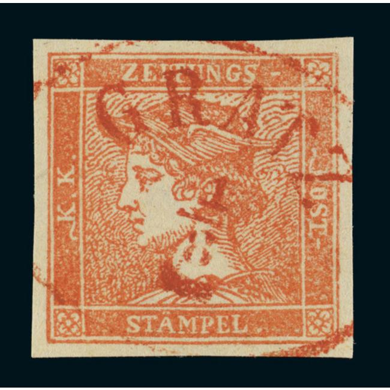
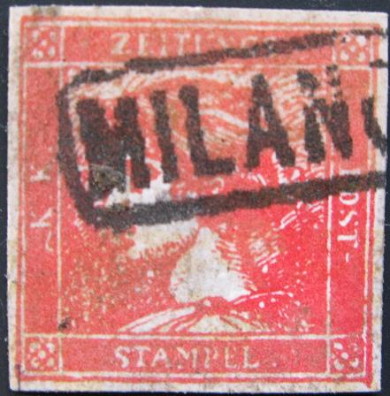

Return To Catalogue - Austria newspaper stamps of 1851 and forgeries, part 1 - Austria Newspaper stamps of 1858 and later - Austria overview
Note: on my website many of the
pictures can not be seen! They are of course present in the
catalogue;
contact me if you want to purchase the catalogue.
(0.6) k blue (Blauer Merkur) (0.6) k yellow (Gelber Merkur) (6) k red (Rosa Merkur) (30) k orange (Zinnober Merkur, rarest stamp of Austria)
Austria newspaper stamps of 1851 and forgeries, part 1
The forger Sigmund Friedl has made forgeries of the 'Zinnoberroten Merkur' stamp. He pretended to have 'found' a large number of these stamps in 1890. Another lucky find in 1895 enabled him to offer all three rare colors. He also offered genuine blue newspaper stamps with his forged cancels applied to it (see http://www.philaforum.com/forum). If my information is correct this is a photo-lithographed forgery. It exists unused and with cancel:

Friedl forgery, image obtained from:
http://de.wikipedia.org/wiki/Sigmund_Friedl, with cancel
"Bregenz 1.APR."
On this forgery, Friedl made a mistake in the cancel by writing
"LESPEDIZIONE" while it should have been
"I.R.SPEDIZIONE": source
http://www.philaforum.com/forum


Images obtained from Josef from Briefmarken-web.de.
His cancels were apparently much less
'convincing' than his forgeries (he might have even used genuine
printing plates). The cancels he used were
(http://www.philaforum.com/forum/):
"Zeitungs -Exped. Wien" (double circle cancel)
"Bregenz" line cancel without box
"Bregenz" as above, but in italic
"Trieste" in two rings
"Venezia" line cancel (slanting text)
"Milano" boxcancel
"Como" single circle cancel
"Vicenza" ringcancel
A set of forgeries, made by the same forger.
The forger Sperati has made forgeries of the yellow, red and orange stamps. He sometimes used genuine (blue?) stamps on which he removed the image and printed a new image.
First Sperati forgery (red and yellow stamps):
This forgery type is rather blur. For example the 'Z' of 'ZEITUNGS' is rather weak (both horizontal lines are almost invisible), similar remarks can be made for the 'E' and 'T' of this word. The second 'K' of 'KK' has its top part missing. Sperati sometimes used genuine stamps with genuine cancels to print his forgeries on.


Red and yellow Sperati forgeries, the cancel 'VENEZIA I.R.
SPEDIZIONE GAZETTE 4/25' was also forged by him. I believe the
'TRIESTE' cancel on the yellow forgery is genuine.
Sperati seems to have two types of the 'VENEZIA I.R. SPEDIZIONE GAZETTE' cancel; one with diameter 21 mm (with dates 1/25, 2/25, 2/31, 4/10 and 4/25) and another with diameter 40 mm (with dates 18/4 and 10/2). For an example of the larger sized cancel, see under the second type forgery. Source: 'The work of Jean de Sperati' by the BPA (1955).


Yellow Sperati forgery on a small piece of a newspaper with
cancel 'WIEN ZEITUNGS- EXPED 20/12'
Sperati seems to have the above 'WIEN ZEITUNGS- EXPED' cancel with several dates: 20/2, 17/10, 10/11, 18/11, 1/12, 10/12, 17/12 and 20/12.
Second Sperati forgery (orange stamp):
Sperati used forged cancels on this second type of forgery.
Sperati forgery

Sperati forgery with forged 'GRATZ 1 8' red cancel. On
http://www.seymourfamily.com/rfrajola/Sperati/AUS02_300.jpg a
similar forgery with the same cancel can be found.


Samples of all the cancels that were used by Sperati for Austria.
The cancels that Sperati used are (besides the
ones already mentioned under the first type of forgery):
'LINZ 18/6 V-VIII' (see image above)
part of a blurred 'ROVERETO' cancel (some kind of seal, see the
two images above).
'EITUNGSEXPED 8/8' (I haven't seen this cancel yet on a forgery)
I've seen some forgeries of these stamps on (genuine?) old Italian Newspapers, often with very fancy cancels. Examples:
Yellow stamp with 'Millwheel' cancel and blue stamp with cancel
'DISTRIBUZIONE' in a double circle with large '2' in the center
For more of these Italy States and Austrian forgeries on old documents, made by the same forger, click here.
The forger Peter Winter also has made forgeries of these stamps (produced around 1980):

(Peter Winter forgeries)
I posess Winter forgeries of all 4 stamps, the yellow stamp has cancel "STEYR 17/11" in a single circle, the red one "PESTH 5/3" in a rectangle and the orange one a double-circled postmark "ZEITUNGS EXPED. LAIBAICH 12/12". As can be seen above the "PESTH 5/3" cancel was also applied on the yellow stamp. Also can be found: "ZEITUNGS EXPED. WIEN 20/11" and "WIEN 3/3 6 A". These forgeries were even offered on pieces of newspaper, but also uncancelled. The outline of the face is badly done. Usually these forgeries have the word "REPLIK" printed on the back.
Modern forgeries exist, I presume that the next stamps are such modern forgeries:





Here another set of modern forgeries of the Mercury Newspaper
stamp, but different from the above ones. These forgeries are
quite common. Three of them are most likely made from a
photograph (there are dots in the design when magnified). Note
the break in the upper right corner in the blue stamp. The last
red stamps have an extension at the bottom right corner.

Very dubious yellow stamp.

Note the break in the lower left outer frameline in these
forgeries (reprints?).
Reprints also exist (see http://www.kitzbuhel.demon.co.uk/austamps/reprints/ for more information).

I've been told that this is a reprint made in 1866.

(Examples; two Fellner reprints, made in 1885)
The above reprints were made by Ernst Fellner (in 1885?). I don't think these reprints are very common.


1904 reprint

Most likely reprints with (the same) forged cancels.
WIPA reprints (1933):

(Wipa 'reprint')
Note: many forgeries of this issue exist! Stamps with inscription 'WIPA' on top and '1933' at the bottom are from philatelic exhibition in Vienna in 1933. Nine shades of colour were issued in sheets of 16 stamps each: light brown, orange, light red, dark red, lilac, violet, green, light blue and dark blue. Cancelled 'Wipa' stamps also exist:
(Cancelled 'WIPA' stamps, reduced sizes)
Austria Newspaper stamps of 1858 and later


{kind=link}
{kind=link}
{kind=link}